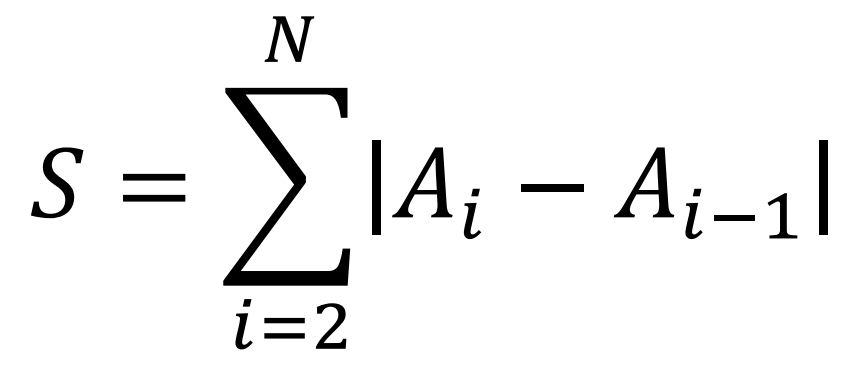

Cho 2 mảng số nguyên A, B. Mảng A gồm N phần tử A1 A2 ... AN và mảng B gồm N phần tử B1, B2 .. BN. các phần tử trong mảng A có mối liên hệ với phần tử tương ứng trong mảng B: 1 ≤ Ai ≤ Bi (∀1 ≤ i ≤ N).
Giá trị hoàn hảo của mảng A được tính theo công thức:

Nhiệm vụ của bạn là tìm ra giá trị hoàn hảo cao nhất mà mảng A có thể đạt được.
Dữ liệu nhập: gồm 2 dòng:
- Dòng đầu tiên chứa một số nguyên dương N - số phần tử của mảng A và B (2 ≤ N ≤ 105)
- Dòng thứ hai chứa N số nguyên dương - các phần tử của mảng B theo đúng thứ tự từ 1 đến N
Dữ liệu xuất: Một số nguyên dương duy nhất là giá trị cần tìm
Có 2 cách chọn để mảng A đạt giá trị hoàn hảo là 9: {1, 10} và {10, 1}